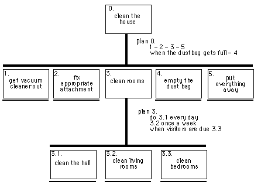
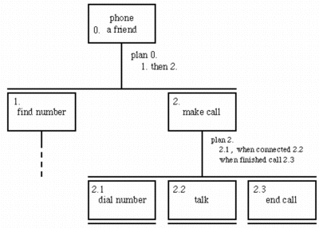

H
C
I
Resources
Exercises
Part I. Foundations
CHAPTERS
Introduction
Chapter I. The Human
Chapter II. The Computer
Chapter III. The Interaction
Chapter IV. Paradigms
Part II. Design Process
Chapters
Chapter V. Design Basics
Chapter VI. Software Proces
Chapter VII. Design Rules
Chapter VIII. Implementation
Chapter IX. Evaluation
Chapter X. Universal Design
Chapter XI. User Support
Part III. Models and Theories
Chapters
Chapter XII: Cognitive Models
Chapter XIII: Socio-Organizational
Chapter XIV: Comm and Collab
Chapter XV: Taks Models
Chapter XVI: Dialogue
Chapter XVII: Models of System
Chapter XVIII: Rich Interaction
@angelosancez_2
Home
Exercises - Taks Models
Exercise 15.1
The exercises for this chapter, like the chapter itself, concentrate on real world rather than computer examples. This is largely because task analysis of current computer systems depends on the particular systems available. If you are teaching a course, and want to set a task analysis exercise for students, it could be of the general form:
Observe use of the . . . computer system.
Perform a task analysis (of some kind).
To what extent do you think the way people perform these tasks isdetermined by the system and to whatextent by the fundamental aspects of the task?
Does the system's menu layout, etc., support the tasks it is used for? In particular, are frequent task sequences easy to perform?
Suggest potential improvements, both incremental changes and radical redesigns of the system.
The details of the question can, of course, be varied depending on the system and students can be directed to particular subsystems where you have observed problems.
The following is a list of objects found in one of the authors' kitchens:
teapot, mug, soup bowl, plate, spoon, table knife, cook's knife, fork, saucepan, frying pan, kettle, casserole, fish slice, tin opener, baking tray, scales, mixing bowl, glasses, jugs, corkscrew, rolling pin, ladle, egg cup, chopping board.
Produce a taxonomy using the TDH notation of these objects. Does it obey the TAKD uniqueness rule? Compare your answer with someone else's. (Note: the authors had great difficulty with items like the corkscrew, which did not fit easily into any generic category - perhaps you did better.)
Answer
Show Answer
As the authors had already produced a partial taxonomy, we interviewed two domain experts (cooks). They were asked to describe how they would group and classify the kitchen items. They were explicitly told (and reminded) that they could have multiple classifications and put the same item into several categories. The authors then cast their answers into TDH notation.
One of the subjects was a doctor and used to medical taxonomies of disease. Despite stressing the looseness of the classifications, he insisted on a complete taxonomic tree (Figure Ex15.1.1).
kitchen object XOR
|__ preparation XOR
| |__ pre-preparation XOR
| | |__ opening
| | | tin opener, cork screw
| | |__ measuring
| | scales, (measuring) jug
| |__ 'proper' preparation XOR
| |__ active
| | rolling pin, cook's knife, (cook's) spoon
| |__ passive
| mixing bowl, chopping board
|__ cooking XOR
| |__ passive
| | teapot
| |__ active XOR
| |__ external power
| | saucepan, frying pan, casserole, baking tray
| |__ internal power
| (electric) kettle
|__ serving XOR
|__ serving
| fish slice, (serving) jug, ladle
|__ eating XOR
|__ active
| spoon, fork, knife}
|__ passive XOR
|__ food
| egg cup, soup bowl, plate
|__ drink
| mug, glass
Figure Ex15.1.1 - TDH taxonomy produced by first subject
As you see all his branches are XOR branches. On discovering that 'jug' had to fit in two places in his taxonomy, he split it into 'serving jug' and 'measuring jug'. This emphasises the need for the task analyst rather than the domain expert to actually draw up the taxonomy!
As it is a true tree it clearly does not satisfy the uniqueness rule, but the only way it could is to invent spurious new categories. One could under 'opening' add categories for 'bottles' (containing corkscrew) and tins (containing tin opener), but this would not improve clarity.
If the first subject was a stickler for precision, the second subject preferred broad categories. Figure Ex15.1.2 shows her initial classification.
kitchen object OR
{__ things for making tea
{ teapot, mug, kettle, spoon
{__ things for eating meals
{ soup bowl, plate, glasses, egg cup
{__ cutlery for meals
{ spoon, table knife, fork
{__ cutlery for cooking
{ spoon, fork, fish slice, tin opener, table knife,
{ corkscrew, rolling pin, ladle
{__ things for making meals
{ saucepan, frying pan, casserole, baking tray, scales,
{ mixing bowl, jugs, chopping board
{__ things for serving meals
jugs, casserole, fish slice, corkscrew, ladle, spoon
Figure Ex15.1.2 - Initial version of TDH taxonomy produced by second subject
We wanted to put some additional structure on this and so, after some discussion, the subject agreed that her basic distinctions were those of function ('making meals' etc.) and between cutlery and non-cutlery. Using these to form an AND branch, we obtained Figure Ex15.1.3.
kitchen object AND
/__ material XOR
/ |__ cutlery
/ | spoon, table knife, fork, fish slice, tin opener
/ | corkscrew, rolling pin, ladle
/ |__ non-cutlery
/ teapot, mug, kettle,
/ soup bowl, plate, glasses, egg cup,
/ saucepan, frying pan, casserole, baking tray, scales,
/ mixing bowl, jugs, chopping board
/__ function OR
{__ making tea
{ teapot, mug, kettle, spoon
{__ cooking meals
{ spoon, fork, fish slice, tin opener, table knife,
{ corkscrew, rolling pin, ladle,
{ saucepan, frying pan, casserole, baking tray, scales,
{ mixing bowl, jugs, chopping board
{__ serving meals
{ jugs, casserole, fish slice, corkscrew, ladle, spoon
{__ eating meals
soup bowl, plate, glasses, egg cup,
spoon, table knife, fork
Figure Ex15.1.3 - Refined version of TDH taxonomy produced by second su
bject
This taxonomy does not obey the uniqueness rule either; for example, fish slice and ladle always appear together. In terms of KRG they are both:
kitchen object/material(cutlery)/
function{cooking meals,serving meals}/
The TAKD purist might demand extra categories to fulfil the uniqueness rule. However, the authors would recommend that students simply be taught to recognise the rule and use it as a heuristic.
It is interesting that both domain experts focused on the functional view of the items, just as the authors did in the book. This suggests that it is indeed a generic way of classifying kitchen objects and would thus be a good candidate for classification in a catalogue or menu system. The second subject also noted that her original breakdown was inspired, not so much by the function per se, but by where the items were stored in her kitchen - itself determined largely by function. This is perhaps the physical equivalent of a menu system!
Exercise 15.2
Complete the tea-making manual in Figure 15.7. Do you think it would be useful? Think of situations where such a manual would be helpful and where a more conceptual manual would be better.
answer
Show Answer
Although a manual for tea making might be regarded as a little extreme, such manuals are useful in several situations. You could pose this exercise, together with the initial task analysis, for different domains where more of the following situations are pertinent.
The first situation where a procedural manual is useful is for the absolute novice who has no idea of the conceptual background. This might be a first-time user, or when an activity is performed very infrequently. A good example of the latter is the installation of computer equipment, which most users perform only once every couple of years. Similarly, recipe books are laid out in a highly procedural fashion, although unfortunately not always clearly:
Beat the egg whites until they froth, then put them into a ramekin. While beating the egg whites, slowly add the white wine.
The second situation where a procedural manual is useful is where there is some sort of safety-critical aspect, and erroneous decisions, even those carefully considered, can be disastrous. Often, in such a situation, the additional stress can cloud judgement and make it far safer to stick to a predetermined drill. Emergency procedures in large chemical or nuclear installations are an example of this -- when an emergency arises the operators are expected to stick closely to the set procedures. The accident at Chernobyl came about in part because the operators felt that they knew enough to override the rule book. Reading a manual in such circumstances may be too time consuming, but an HTA can be used to train the operator to respond automatically. The use of HTA for military training is largely in this vein.
Thirdly, the situation may not be safety critical, but it may be time critical. Much analysis may have gone into discovering the most efficient way to perform a task, and that way is then taught, by rote, to the operators. Although this form of time and motion approach is less likely to be useful in an information intensive job than in a factory (if there!), there are jobs, such as telephony, where it is still important.
Finally, the user may not have sufficient knowledge to understand why a process works, but can follow a set of instructions. This may relate either to the complexity of the task or to the skill of the operator. If one were teaching kitchen craft to mentally handicapped people, then just such a procedural description of tea making would be required.
The problem with such procedural manuals is that they give the operator no real feeling as to why the tasks are performed in the way they are. Whether such a manual is preferred by a novice user depends very much on the user's personality. Some people prefer to have a set of instructions to get them started, whereas others find it very difficult to use something without some sort of conceptual understanding.
The procedural manual really comes unstuck when the set of tasks considered is not complete. When faced with a radically new task the user must understand enough of the domain to perform it ad hoc or to modify an existing procedure. One frequent cause of entirely new situations is unforeseen breakdowns of equipment. For example, if the kettle was broken, one could then abstract that the real reason for boiling the kettle was to heat water and that this could be performed by heating a bowl of water in the microwave oven. Such a modification of the procedure is not even suggested by the procedural manual.
Exercise 15.3
Figure 15.1 shows a textual representation of an HTA description of vacuum cleaning. Present the same information in a diagrammatic form
Answer
Show Answer
This is given in Figure Ex15.3.1. In fact, this uses the revised version of 'plan 3', but the choice of plan makes no difference to the structure of the diagram.

Figure Ex15.3.1 - HTA diagram for vacuum cleaning a house
Exercise 15.4
(Converse to above) Figure 15.6 uses an HTA diagram to show the actions in which a tractor is involved; show the same information textually.
Answer
Show Answer
0. life cycle of tractor
1. maintenance
2. cultivation
2.1. connect implement
2.1.1 fix harrow
2.1.2 fix plough
2.2. drive to field
2.3. cultivate field
2.4. drive to shed
2.5. put away
Plan 0: as required --- 2
when tractor breaks down --- 1
Plan 2: 2.1 -- 2.2 -- 2.3 -- 2.4 -- 2.5
Plan 2.1: one of 2.1.1 or 2.1.2 depending on job
Exercise 15.5
Observe an office, note the actions performed and the objects used depending on the available equipment; use different recording techniques as described in Chapter 9. Then use the different task analysis techniques to structure your findings. (Note: this could be a group project.)
Answer
Show Answer
The easiest starting point is simply to go around the office noting down what is there:
typewriter, corrector fluid, desk diary, pen, pencil, scissors, envelopes, paper clips, typing paper, post-it notes, telephone, telephone directory (internal and external), filing cabinet containing folders, clock, wall calendar.
This list can then be used to begin to build either a knowledge-based or an entity--relation description. However, the latter will also require at least a list of actors. In a university office this might include the following:
secretary, lecturer, student (undergraduate), research student, research staff, administrator However, the roles that they take may not be simple. For example, we may find that a lecturer comes into the office to use the typewriter. That is the lecturer acts in the role of typist.
Neither of these descriptions can be complete, nor can an HTA begin, without a list of activities. This can be obtained in two main ways. First, students can simply make an unstructured list of all the activities they see, and then add structure to it. Alternatively, they can follow specific tasks noting what is done in what order. In the latter case, they are encouraged to write the list of activities in a purely sequential manner -- they are observing. Only later will they build upon this a hierarchical interpretation.
It might obviously cause severe inconvenience if all the members of a class were to interview the office staff. However, to gain first hand interview experience, some domain expert can be invited into a class or lecture to talk about their work and be questioned about it. Alternatively, students could make their own notes from a preprepared videotaped interview.
If a question of this sort is used as an assessment, then we would suggest that students hand in not just the completed task analysis, but intermediate notes and representations. The most important thing in determining the effectiveness of their analysis is the care with which they carried out the original observation and subsequent working.
Exercise 15.6
This exercise is based on the mobile phone scenario on the web at: www.hcibook.com/e3/scenario/phone//
A user interface designer analyses Andy's behaviour with his original phone and realises that both scenarios A and B are part of a general pattern as shown in the Hierarchical Task Analysis (HTA) in Figure 15.8.
(i) Complete the HTA for phoning using the original phone taking into account scenarios A and B only and briefly describe your solution.
(ii) Do a complete HTA for phoning using the new phone based on scenario C only
(iii) You will find that scenario C (and hence your solution to part (ii)) does not quite fit into the general pattern in Figure 15.8.
Discuss whether the solutions to (i) and (ii) can be modified to emphasise their common features and whether this would clarify the overall task description.

Figure 15.8. Rough HTA
answer available for tutors only